Alpha Set — Art Briefs
This document gives one written art brief per card in design/cards/alpha-set.md (18 cards total). Each brief names the card's Fount-driven palette and mood, calls out concrete visual elements drawn from that card's own type line and rules text, and notes how the scene should be composed to fit the Art Window zone defined in design/cards/card-anatomy.md. These briefs are the words that must be approved before any illustration work begins on the Alpha set — no image is produced from this document, and nothing here assumes a particular way of turning it into one.
Magic — the Tangle
Unwritten Hour

Palette: Violet — the Tangle's uncanny ritual mood: cause-and-effect bent by insistence, First Weave echoes. Subject/Scene: A Starweave Communion ritualist stands at a star-mapped dais, mid-gesture, as a queue of glowing waypoint-tokens reorders itself out of sequence around them. Key visual elements:
- A visible queue of glowing tokens, with one entry breaking out of sequence to resolve first
- A ritual sigil or star-map coordinates grid beneath the caster's hands, a Magic-type working
- Violet threads of light connecting the caster's hands to the reordering queue
Composition: wide, landscape rectangle (~5:3), the large rectangular window beneath the Name Slot per card-anatomy.md — keep the reordering queue horizontal so "front of the line" reads left-to-right at a glance.
Oathbreaker's Toll

Palette: Violet — the Tangle's uncanny ritual mood, here turned toward debt and renegotiation. Subject/Scene: A violet ritual-chain unspools from a broken oath-ledger and wraps around an opposing Unit, visibly sapping its combat strength for the rest of the turn. Key visual elements:
- A broken chain or torn ledger/contract marking a debt due by the end of the turn
- An opposing Unit visibly weakened and staggering as violet threads reduce its combat strength
- Stillness in the ritualist's stance — the working reads as deliberate, not a flash of light
Composition: wide, landscape rectangle (~5:3), the large rectangular window beneath the Name Slot per card-anatomy.md — frame the drained Unit off-center so the chain/ledger leads the eye toward it.
Echo Recall

Palette: Violet — the Tangle's uncanny ritual mood, here turned toward memory and retrieval. Subject/Scene: A hand reaches into a heap of wrecked, discarded material (the Wreck) and pulls one card free, trailing a violet afterimage back toward its owner's waiting hand. Key visual elements:
- A Wreck pile — broken, discarded cards rendered as physical wreckage
- One card leaving the pile trailing a violet echo/afterimage toward a reaching hand
- A sudden burst of motion around the resolving hand, not a slow ritual
Composition: wide, landscape rectangle (~5:3), the large rectangular window beneath the Name Slot per card-anatomy.md — keep the Wreck pile low and the retrieving hand/echo trail rising diagonally across the frame.
Technology — the Circuit
Replicant Foundry Core

Palette: Copper — the Circuit's warm mechanized repetition: a single working design, copied without end. Subject/Scene: A Wrought Assembly foundry core, a Generator permanent, glows at the center of an assembly line, producing a Circuit Point while an exact token copy of itself is stamped out beside it. Key visual elements:
- The Generator core itself, producing a visible Circuit Point as a glowing copper conduit or spark
- An exact token copy of the permanent emerging beside the original at the moment it is created
- Repeating, modular Wrought Assembly foundry architecture, built for Technology repetition
Composition: wide, landscape rectangle (~5:3), the large rectangular window beneath the Name Slot per card-anatomy.md — center the core with the assembly line receding symmetrically left and right.
Firmware Sentinel

Palette: Copper — the Circuit's warm mechanized precision, told once what to do. Subject/Scene: A fixed copper Technology sentinel permanent tracks a single Unit with one precise beam of light, ready to strike on command. Key visual elements:
- A stationary Technology sentinel permanent, not a mobile Unit
- One precise targeting beam or spark aimed at a single Unit
- Copper plating with a single steady optical sensor
Composition: wide, landscape rectangle (~5:3), the large rectangular window beneath the Name Slot per card-anatomy.md — place the sentinel to one side with its beam crossing the frame toward its target.
Drone Cascade

Palette: Copper — the Circuit's warm mechanized repetition, scaled into a verdict. Subject/Scene: A dense cascade of identical copper Technology drones, a single Unit built from many bodies at once, descends together in tight formation. Key visual elements:
- Multiple identical drones forming one cascading Unit, not a single figure
- Uniform copper Technology plating repeated across every drone, no individual variation
- A sense of descent/mass arrival across the whole formation, not one strike
Composition: wide, landscape rectangle (~5:3), the large rectangular window beneath the Name Slot per card-anatomy.md — let the drone formation fill the width of the frame so it reads as a swarm, not a lone figure.
Intelligence — the Signal
Foreknowledge Cipher

Palette: Cyan — the Signal's cool analytic watchfulness, knowing a move before it happens. Subject/Scene: A Panoptic Concord cipher-device hovers between two Archive piles, its cyan sensor-light resolving a reading of the top card of each. Key visual elements:
- Two distinct Archive piles, an opponent's and the caster's own, both being read
- A cyan analytic beam or eye motif reading the top card of each Archive
- Panoptic Concord architecture — layered, watchful, data-cathedral in feel
Composition: wide, landscape rectangle (~5:3), the large rectangular window beneath the Name Slot per card-anatomy.md — balance the two Archive piles left and right with the cipher device centered between them.
Whispered Contract

Palette: Cyan — the Signal's cool analytic watchfulness, reading the fine print first. Subject/Scene: A contract unrolls in cyan light as its resolving glow reveals the edges of an opponent's held cards. Key visual elements:
- A contract or ledger document, its fine print visibly illuminated
- An opponent's Hand of cards, partially fanned open and revealed
- A subdued, cool cyan glow rather than an aggressive one — quiet intelligence-gathering, not a strike
Composition: wide, landscape rectangle (~5:3), the large rectangular window beneath the Name Slot per card-anatomy.md — keep the composition low-key and close, contract in the foreground, the revealed Hand receding behind it.
Static Ambush

Palette: Cyan — the Signal's cool analytic watchfulness, here turned into hesitation rather than a blow. Subject/Scene: A Ready Unit's weapon-hand freezes and becomes Spent inside a burst of cyan static interference controlled by its opponent. Key visual elements:
- A Unit caught mid-action, its readiness visibly draining away as it becomes Spent
- Visible static/interference distortion in cyan around the frozen Unit, an opponent's doing
- A sudden, resolving burst of light — the ambush lands in an instant
Composition: wide, landscape rectangle (~5:3), the large rectangular window beneath the Name Slot per card-anatomy.md — center the frozen Unit with the static interference radiating outward to fill the frame.
Biology — the Bloom
Sporeknit Warden

Palette: Green — the Bloom's patient growth, worn as a body. Subject/Scene: A Warden Unit grown rather than built, its body knit from spore-mass and fungal fiber, a Biology creature with one visible Growth counter. Key visual elements:
- A humanoid or beast-like Warden body visibly made of fungal/spore growth, not armor or metal
- One visible Growth counter rendered as a bud, node, or fruiting body on the Warden's Biology form
- Cultivated, seeded ground beneath it, showing the Mireth Bloom's "harvest what it became" philosophy
Composition: wide, landscape rectangle (~5:3), the large rectangular window beneath the Name Slot per card-anatomy.md — root the Warden low in the frame with the seeded ground filling the width beneath it.
Feral Bloomcaller

Palette: Green — the Bloom's patient growth, accumulating rather than striking. Subject/Scene: A small feral Unit calls growth into being at any moment its controller chooses, vines and spores gathering and thickening around it. Key visual elements:
- A small, feral (not armored) Unit — the emphasis is accumulation, not a single strike
- Visible vine/spore growth actively gathering into a new Growth counter around the creature
- An alert, ready-at-any-moment posture, as if it can act the instant its controller wants it to
Composition: wide, landscape rectangle (~5:3), the large rectangular window beneath the Name Slot per card-anatomy.md — keep the creature small within the frame with the gathering growth spiraling around it to fill the width.
Rootbind Thicket

Palette: Green — the Bloom's patient growth, immovable and rooted. Subject/Scene: A dense, tangled thicket Unit of roots and spores that has never moved and shows no sign it ever will, its whole strength stored in Growth counters instead. Key visual elements:
- A thick, immobile mass of roots/thicket rather than a mobile creature
- Three visible Growth counters rendered as three distinct pods, buds, or fruiting bodies
- No weapon or aggressive posture at all — pure defensive, rooted stillness
Composition: wide, landscape rectangle (~5:3), the large rectangular window beneath the Name Slot per card-anatomy.md — let the thicket sprawl to fill the full width of the frame, low and grounded rather than tall.
Materials — the Mass
Salvage-Wrought Bastion

Palette: Ash-grey — the Mass's industrial endurance, nothing wasted. Subject/Scene: A Cindral Reach bastion, a Generator permanent built from salvaged hull plating, produces a glowing Mass Point at its core while a fresh Fortification counter is welded onto its side. Key visual elements:
- A fortified permanent visibly assembled from mismatched salvaged plating, the Reach's Materials doctrine
- A glowing conduit or core producing a Mass Point, the Generator ability made visible
- One visible Fortification counter shown as a freshly welded plate or patch
Composition: wide, landscape rectangle (~5:3), the large rectangular window beneath the Name Slot per card-anatomy.md — center the bastion as a wide, low silhouette so it reads as a stronghold rather than a single object.
Line-Fleet Trooper

Palette: Ash-grey — the Mass's industrial endurance, individually unremarkable, collectively a wall. Subject/Scene: A single armored Unit stands in formation, its combat strength drawn from the suggestion of an entire line of identical troopers extending behind them. Key visual elements:
- One foregrounded armored Unit, ash-grey Materials plating, built for the line rather than for flourish
- A visible rank/line of identical troopers implied behind or beside them
- Uniform, unremarkable equipment — no hero armor, no individual flourish
Composition: wide, landscape rectangle (~5:3), the large rectangular window beneath the Name Slot per card-anatomy.md — place the foreground trooper slightly off-center so the implied line reads across the width of the frame behind them.
Cinder-Forged Plating

Palette: Ash-grey — the Mass's industrial endurance, built to be rebuilt. Subject/Scene: A sheet of cinder-forged plating is being welded onto another permanent under its controller's Materials doctrine, still glowing from the forge. Key visual elements:
- Plating visibly forged from cinder and ash, glowing at its hot-worked edges
- The act of fortifying another permanent you control, mid-attachment as if about to place a Fortification counter
- Sparks, weld-light, or rivets emphasizing repair-in-progress rather than a finished object
Composition: wide, landscape rectangle (~5:3), the large rectangular window beneath the Name Slot per card-anatomy.md — frame the weld point where plate meets permanent at the horizontal center of the window.
Multiple Types and Multiple Costs
Wrought-Bloom Graft

Palette: split ash-grey/green (Mass then Bloom, matching the Cost line order and the Frame/Border's left-to-right band order) — the Reach's salvage doctrine applied to something grown, not built. Subject/Scene: A hybrid Unit — half salvaged ash-grey Materials plating, half living Biology growth grafted onto it — standing as one uneasy whole. Key visual elements:
- A visible seam where salvaged Materials plating meets grafted Biology growth on the same Unit
- One Growth counter shown as living tissue actively spreading from the graft point
- A functional, armed posture backing up its combat strength, not purely decorative
Composition: wide, landscape rectangle (~5:3), the large rectangular window beneath the Name Slot per card-anatomy.md — split the frame roughly along the same left-to-right line as the plating/growth seam, echoing the card's split Frame/Border bands.
Signal-Wrought Prototype

Palette: split cyan/copper (Signal then Circuit, matching the Cost line order and the Frame/Border's left-to-right band order) — a built object with a sensor-like, watching quality. Subject/Scene: A Panoptic Concord prototype permanent, part built Technology chassis and part watching Intelligence sensor, peers into the top of its own Archive at any moment its controller holds priority. Key visual elements:
- A built, mechanical prototype chassis, copper Circuit Technology construction
- An integrated sensor or scanning aperture, cyan Signal Intelligence function, reading the top of its controller's Archive
- A poised, instant-ready stance, as if it can act the moment priority allows
Composition: wide, landscape rectangle (~5:3), the large rectangular window beneath the Name Slot per card-anatomy.md — split the frame roughly along the same left-to-right line as the cyan/copper divide, echoing the card's split Frame/Border bands.
Tangle-Forged Bolt

Palette: split violet/ash-grey (Tangle then Mass, matching the Cost line order and the Frame/Border's left-to-right band order) — a ritual bound to matter, just in case. Subject/Scene: A forged metal bolt, ash-grey and solid, inscribed along its length with a glowing violet ritual sigil, about to strike a target Unit. Key visual elements:
- A solid forged-metal weapon form, ash-grey Materials construction
- A glowing violet ritual sigil or rune inscribed on its surface, the Magic binding made visible
- A single point of impact showing the strike about to land on any Unit
Composition: wide, landscape rectangle (~5:3), the large rectangular window beneath the Name Slot per card-anatomy.md — angle the bolt diagonally across the frame toward its point of impact.
Frontier Set — Cards of the Battlefield Graph
Bastion Reclamation Crew

Palette: Ash-grey — the Mass's industrial endurance, reinforcing what's already dug in. Subject/Scene: A Cindral Reach reclamation crew welds a fresh Fortification plate onto a Generator core, working calmly despite the Planet around them sitting under active Blockade. Key visual elements:
- A Generator permanent being reinforced with a visible Fortification counter, shown as a freshly welded plate
- Blockade markers or a besieging line visible at the Planet's edge, showing the danger the crew works through
- A salvage/reclamation crew in ash-grey Materials gear, calm and workmanlike rather than alarmed
Composition: wide, landscape rectangle (~5:3), the large rectangular window beneath the Name Slot per card-anatomy.md — keep the crew and Generator core low and central with the Blockade line visible at the frame's edge.
Frontier Spore Cluster

Palette: Green — the Bloom's patient growth, triggered the instant new ground opens up. Subject/Scene: A cluster of frontier spore-growths pulses and swells the instant a Discovery action cracks open new ground nearby, a Growth counter blooming visibly on the Unit. Key visual elements:
- A spore cluster Unit visibly swelling with a new Growth counter, rendered as a budding node
- A Discovery action shown happening just beyond it — freshly opened, unclaimed ground or a marker cracking open
- Biology growth reacting instantly, mid-bloom rather than static, since this can resolve any time its controller holds priority
Composition: wide, landscape rectangle (~5:3), the large rectangular window beneath the Name Slot per card-anatomy.md — center the spore cluster low in frame with the Discovery site visible just beyond it.
Wormhole Ledger

Palette: Cyan — the Signal's cool analytic watchfulness, reading a passage before anyone else does. Subject/Scene: A Panoptic Concord ledger-device hovers beside a Wormhole, its cyan readout unrolling the Restriction bound to that passage while a second beam peers into the top of its controller's own Archive. Key visual elements:
- A visible Wormhole with its carried Restriction shown as a glowing cyan clause or seal on the passage
- The top card of the controller's Archive lit up mid-read, as if deciding whether to leave it or move it away
- Panoptic Concord ledger/architecture styling — layered, cyan, watchful rather than aggressive
Composition: wide, landscape rectangle (~5:3), the large rectangular window beneath the Name Slot per card-anatomy.md — place the Wormhole and its Restriction seal on one side, the Archive read on the other, balanced across the frame.
Rite of Unmaking

Palette: Violet — the Tangle's uncanny ritual mood, here turned toward closing a path rather than opening one. Subject/Scene: A Starweave Communion ritualist stands at the endpoint of a Wormhole anchored to a Planet they control, closing violet threads of light around the passage as it undergoes Closure and unravels from the battlefield graph. Key visual elements:
- A Wormhole visibly sealing shut at its endpoint near a controlled Planet, mid-Closure
- Violet ritual threads winding the passage closed rather than shattering it — a deliberate unmaking, not violence
- The battlefield graph itself faintly visible, with the closing Wormhole's connection fading from it
Composition: wide, landscape rectangle (~5:3), the large rectangular window beneath the Name Slot per card-anatomy.md — angle the closing Wormhole diagonally across the frame with the Planet anchor in one corner.
Replication Beachhead

Palette: Copper — the Circuit's warm mechanized repetition, copying itself the instant it can. Subject/Scene: A Wrought Assembly beachhead structure, a Generator attuned to the Circuit, produces a copper Circuit Point at its core the moment an Assault action lands a Capture nearby, an exact token copy already stamping out beside it. Key visual elements:
- A Generator core producing a glowing copper Circuit Point, the Circuit resource pool made visible
- An exact token copy of the permanent emerging beside the original the instant a Capture resolves
- An Assault still visibly unfolding at the Field's edge, the trigger for the beachhead's replication
Composition: wide, landscape rectangle (~5:3), the large rectangular window beneath the Name Slot per card-anatomy.md — center the beachhead Generator with the fresh token copy emerging symmetrically beside it.
Character Signatures
Kordelia Vess, Salvage-Marshal of the Cinder Yards
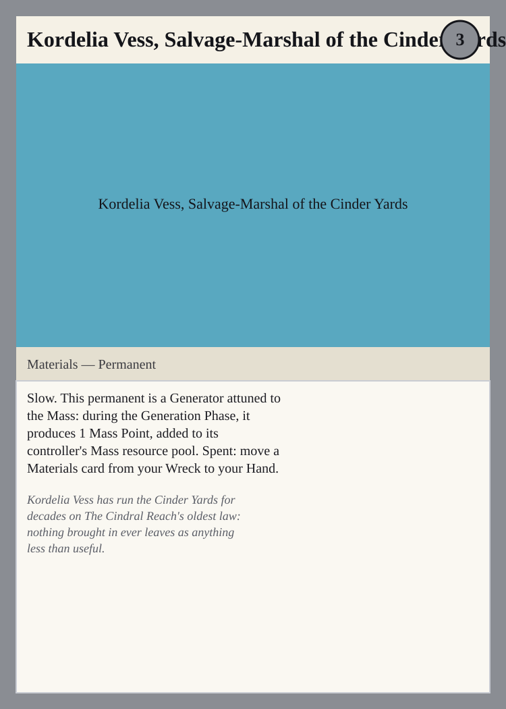
Palette: Ash-grey — the Mass's industrial endurance, worn by a marshal who wastes nothing. Subject/Scene: Kordelia Vess, Salvage-Marshal of the Cinder Yards, stands at the Generator core she commands, a Mass Point glowing at its heart while she pulls a Materials card free from a Wreck pile at her feet and passes it toward an open Hand. Key visual elements:
- Kordelia Vess herself, a named Cindral Reach marshal in ash-grey salvage gear, not a generic Unit
- The Generator core producing a visible Mass Point, the Mass resource pool made tangible
- A Wreck pile at her feet with one Materials card being pulled free toward a Hand
Composition: wide, landscape rectangle (~5:3), the large rectangular window beneath the Name Slot per card-anatomy.md — place Kordelia Vess center-frame with the Generator core behind her and the Wreck pile low in the foreground.
Mother-Thread Ilvex, First Voice of the Sprawl
Palette: Green — the Bloom's patient growth, spreading outward from one living center. Subject/Scene: Mother-Thread Ilvex, First Voice of the Sprawl, stands rooted at the center of a spreading Biology growth-network, a new Growth counter blooming on her Unit form each time another Biology permanent takes root nearby. Key visual elements:
- Mother-Thread Ilvex herself, a named Mireth Bloom figure fused with the Sprawl's living growth, not a generic creature
- Additional Biology growth visibly taking root nearby, tied by living threads back to her
- A fresh Growth counter shown blooming on her form, marking the moment another permanent is played
Composition: wide, landscape rectangle (~5:3), the large rectangular window beneath the Name Slot per card-anatomy.md — root Mother-Thread Ilvex centrally with the Sprawl's growth threads radiating outward to the frame's edges.
Selin Vashti Corr, Whisper-Broker of the Glass Spires
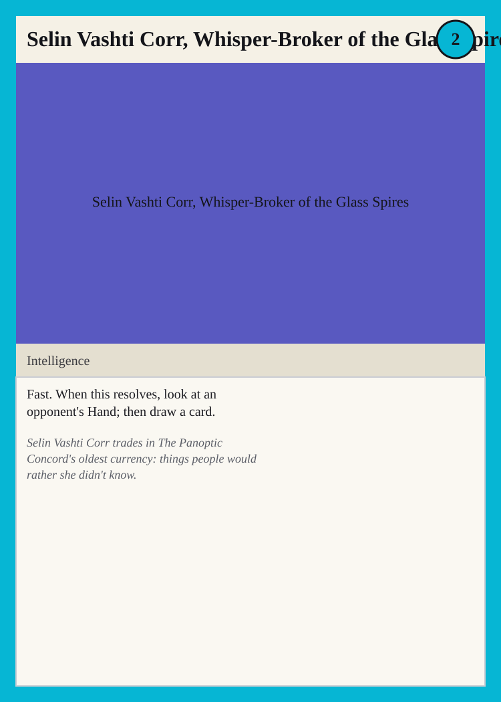
Palette: Cyan — the Signal's cool analytic watchfulness, trading in what others would rather keep hidden. Subject/Scene: Selin Vashti Corr, Whisper-Broker of the Glass Spires, leans close to an opponent's fanned-open Hand, reading it in cyan light before drawing a card of her own from the top of the deck. Key visual elements:
- Selin Vashti Corr herself, a named Panoptic Concord broker in cyan-lit Intelligence attire, not a generic figure
- An opponent's Hand of cards partially revealed, fanned open under her reading gaze
- A single card being drawn toward her in the same beat, quiet and transactional rather than a strike
Composition: wide, landscape rectangle (~5:3), the large rectangular window beneath the Name Slot per card-anatomy.md — keep Selin Vashti Corr close and low-key in the foreground with the opponent's Hand receding behind her.
Meridian Aule, Star-Read Oracle of the Tangle
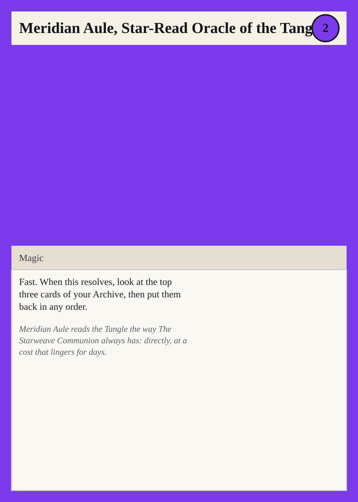
Palette: Violet — the Tangle's uncanny ritual mood, paid for in days spent reading it. Subject/Scene: Meridian Aule, Star-Read Oracle of the Tangle, hovers three cards from the top of her Archive in a violet ritual light, reading them before setting them back down in a new order. Key visual elements:
- Meridian Aule herself, a named Starweave Communion oracle in violet Magic ritual dress, not a generic caster
- Three distinct cards suspended above an open Archive, visibly being read and reordered
- A violet threading motion showing the cards settling back into a new order rather than being drawn away
Composition: wide, landscape rectangle (~5:3), the large rectangular window beneath the Name Slot per card-anatomy.md — arrange the three floating cards in a shallow arc above the Archive at the frame's center.
Unit 0-Prime "Cast-Aside", the First Flaw
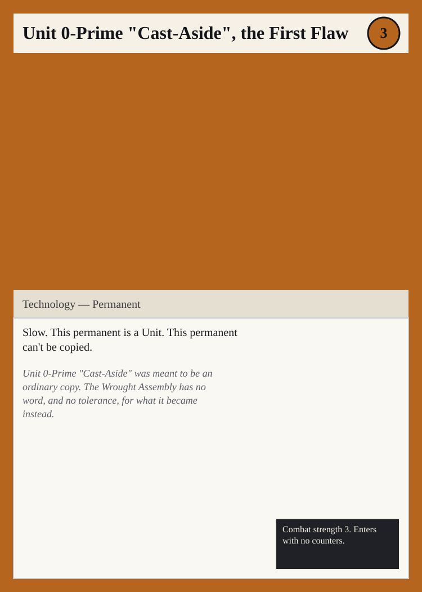
Palette: Copper — the Circuit's warm mechanized precision, marred by the one flaw it was never allowed to have. Subject/Scene: Unit 0-Prime, "Cast-Aside", stands alone among rows of identical Wrought Assembly copies, a copper Technology Unit whose frame is subtly marred — a flaw stamped into its plating that marks it as the one that can never be copied. Key visual elements:
- Unit 0-Prime itself, a single copper Technology Unit, deliberately imperfect against a backdrop of uniform copies
- A visible flaw or scar in its plating, the mark of the "First Flaw" that makes it unable to be copied
- Rows of identical, flawless copper units in the background, emphasizing this Unit's singular difference
Composition: wide, landscape rectangle (~5:3), the large rectangular window beneath the Name Slot per card-anatomy.md — place Unit 0-Prime slightly off-center against a receding grid of identical copies behind it.
Fount Economy Set — Closing the Generator Gap
Cradle-Root Colony
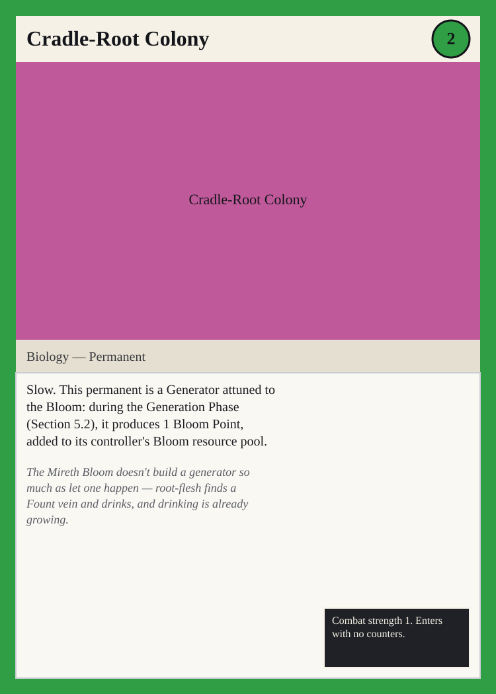
Palette: Green — the Bloom's patient growth, made into an engine that runs by itself. Subject/Scene: A Mireth Bloom Generator permanent takes root at the heart of a colony of tangled growth, its Biology core swelling as it produces a steady Bloom Point into a glowing resource pool. Key visual elements:
- The Generator core itself shown attuned to the Bloom, a living root-mass rather than machinery, producing a visible Bloom Point
- A glowing green resource pool collecting the produced Point, the Bloom economy made tangible
- Cultivated colony growth spreading from the core, all Biology rather than built structure
Composition: wide, landscape rectangle (~5:3), the large rectangular window beneath the Name Slot per card-anatomy.md — center the root-colony core low in frame with the growth spreading to fill the width.
Sporeling Latch
Palette: Green — the Bloom's patient growth, spent almost without a thought. Subject/Scene: A single Mireth Bloom sporeling takes root, small and unregarded, already carrying the one Growth counter that is the only reason it was ever planted. Key visual elements:
- A small, easily-overlooked Biology sporeling, barely more than a seed taking root
- One visible Growth counter shown as a single bud or node on the sporeling's tiny form
- Bare, minimal cultivated ground around it, emphasizing how little the Mireth Bloom invests in something this disposable
Composition: wide, landscape rectangle (~5:3), the large rectangular window beneath the Name Slot per card-anatomy.md — keep the sporeling small and low in frame, surrounded by empty ground.
Panoptic Relay Spire
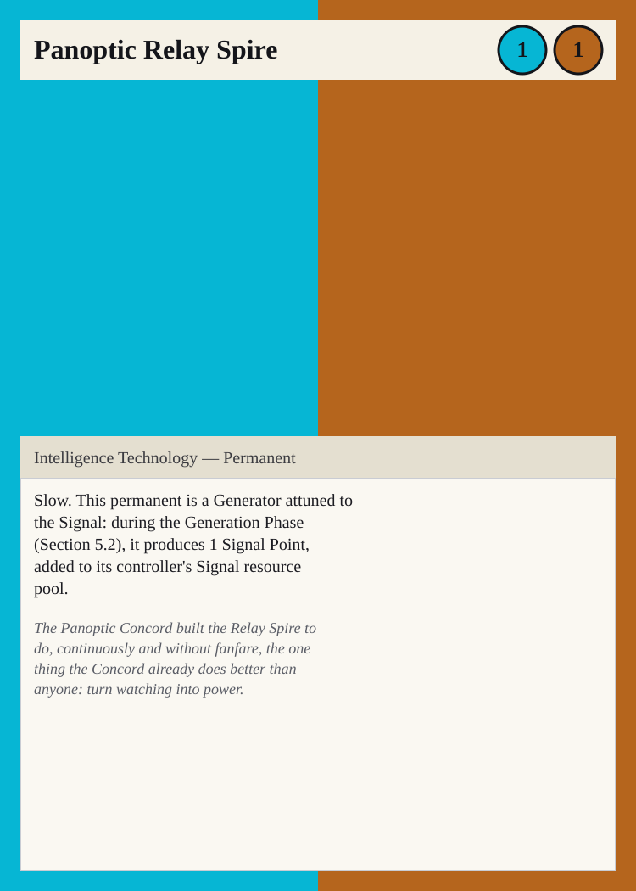
Palette: split cyan/copper (Signal then Circuit, matching the Cost line order and the Frame/Border's left-to-right band order) — the Panoptic Concord's watchful signal-craft, built into standing Technology. Subject/Scene: A Panoptic Concord relay spire, an Intelligence Technology Generator permanent, stands fixed against the sky, its cyan sensor-crown producing a Signal Point while copper Circuit conduits at its base carry the charge into a waiting resource pool. Key visual elements:
- The Generator core attuned to the Signal, its cyan sensor-crown visibly producing a Signal Point
- Copper Circuit Technology conduits and plating forming the spire's built structure, distinct from the sensor-crown above
- A glowing resource pool at the spire's base collecting the produced Point
Composition: wide, landscape rectangle (~5:3), the large rectangular window beneath the Name Slot per card-anatomy.md — split the frame roughly along the same left-to-right line as the cyan/copper divide, echoing the card's split Frame/Border bands.
Communion Waystone
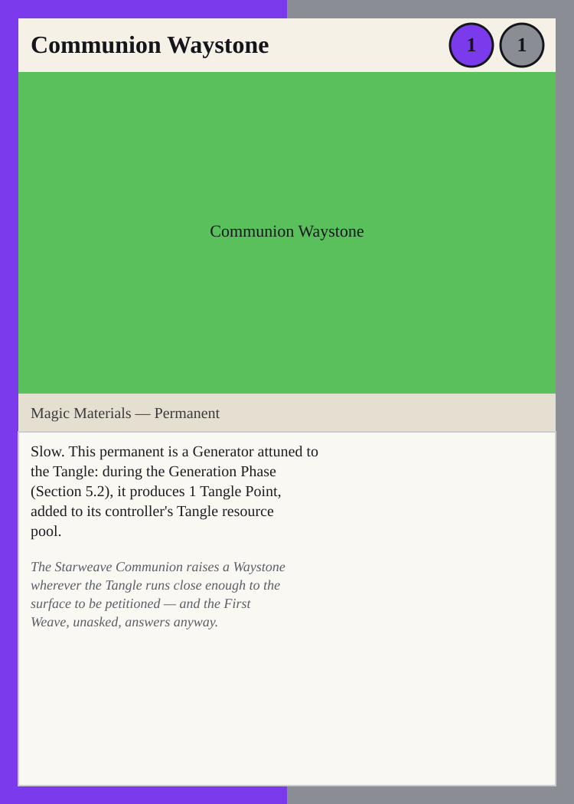
Palette: split violet/ash-grey (Tangle then Mass, matching the Cost line order and the Frame/Border's left-to-right band order) — the Starweave Communion's ritual reach, grounded in raised stone. Subject/Scene: A Starweave Communion waystone, a Magic Materials Generator permanent, rises where the Tangle runs near the surface, violet ritual light pulling a Tangle Point up through its ash-grey stone into a waiting resource pool. Key visual elements:
- The Generator core attuned to the Tangle, violet ritual light visibly producing a Tangle Point
- Raised, weathered Materials stonework forming the waystone itself, the Magic working grounded in something physical
- A glowing resource pool at the waystone's base collecting the produced Point
Composition: wide, landscape rectangle (~5:3), the large rectangular window beneath the Name Slot per card-anatomy.md — split the frame roughly along the same left-to-right line as the violet/ash-grey divide, echoing the card's split Frame/Border bands.
Whispered Rite
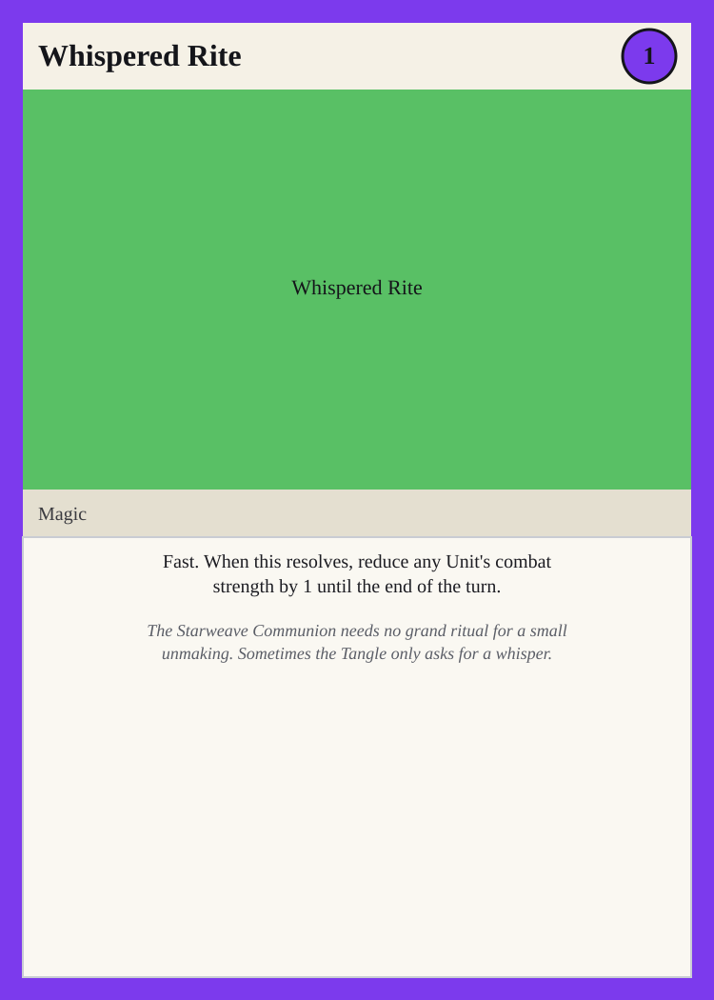
Palette: Violet — the Tangle's uncanny ritual mood, spent on the smallest possible unmaking. Subject/Scene: A Starweave Communion ritualist murmurs a single quiet phrase, and a violet thread reaches out to reduce an opposing Unit's combat strength for the rest of the turn. Key visual elements:
- A single violet thread of Magic reaching toward one opposing Unit's combat strength, thin and precise rather than a blast
- The targeted Unit visibly weakening as the working moves to reduce its strength, staggering just slightly
- A sudden, resolving flicker of light rather than a sustained ritual, its effect fading again by the end of the turn
Composition: wide, landscape rectangle (~5:3), the large rectangular window beneath the Name Slot per card-anatomy.md — keep the ritualist small and distant, with the violet thread leading the eye to the weakening Unit.
Stamped Chassis Unit
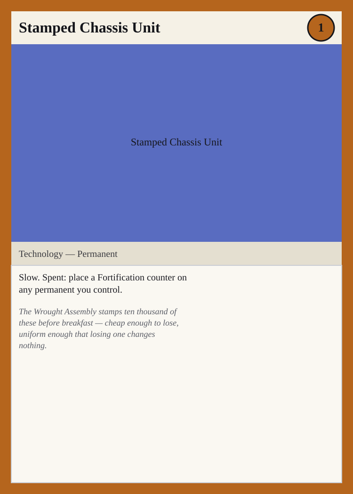
Palette: Copper — the Circuit's warm mechanized repetition, stamped out by the thousand. Subject/Scene: A Wrought Assembly line stamps out one more identical copper Technology chassis unit, already reaching to place a Fortification plate onto another permanent nearby. Key visual elements:
- A stamped, uniform copper Technology chassis, indistinguishable from thousands of identical units
- The chassis unit placing a Fortification plate onto another permanent it controls, mid-weld
- Assembly-line repetition visible in the background, emphasizing how cheaply the Wrought Assembly produces these
Composition: wide, landscape rectangle (~5:3), the large rectangular window beneath the Name Slot per card-anatomy.md — keep the chassis unit and the permanent it's fortifying close together in the frame, with the assembly line receding behind them.
Character Signatures, Wave 2
Torel Ashgrave, Line-Captain of the Ember Vanguard
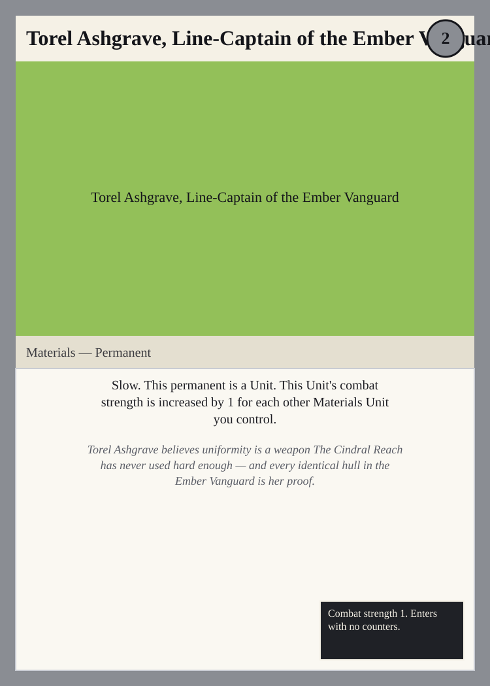
Palette: Ash-grey — the Mass's industrial endurance, worn identically down the whole line. Subject/Scene: Torel Ashgrave, Line-Captain of the Ember Vanguard, stands at the head of a formation of identical Materials Unit hulls, her own combat strength visibly drawn from how many stand behind her. Key visual elements:
- Torel Ashgrave herself, a named Cindral Reach Line-Captain in ash-grey Materials plating, not a generic Unit
- A visible rank of other identical Materials Unit hulls she controls, each uniform hull explaining why her combat strength is increased
- No individual flourish anywhere in the formation — uniformity itself is the point, per her own conviction
Composition: wide, landscape rectangle (~5:3), the large rectangular window beneath the Name Slot per card-anatomy.md — place Torel at the head of the formation with the identical hulls receding behind her to fill the frame.
Rathe Ossuary-Kin, Spore-Hound of the Sprawl
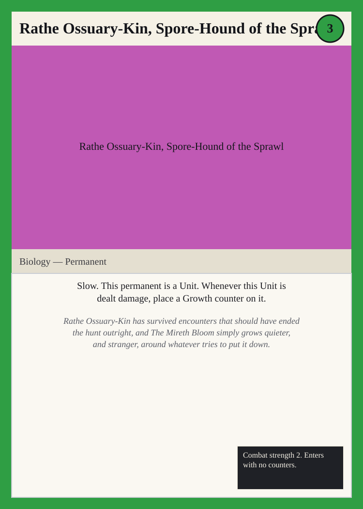
Palette: Green — the Bloom's patient growth, thickening the longer something tries to kill it. Subject/Scene: Rathe Ossuary-Kin, Spore-Hound of the Sprawl, stands scarred and unbothered at the center of the Mireth Bloom's Sprawl, a fresh Growth counter blooming on his Biology Unit form the instant a wound lands. Key visual elements:
- Rathe Ossuary-Kin himself, a named Mireth Bloom Biology Unit fused with spore-mass, not a generic creature
- A visible Growth counter shown taking root on his form at the exact moment damage is dealt to him, the wound feeding rather than harming
- A quiet, unhurried stillness in his stance, stranger and calmer with every scar the Sprawl gives him
Composition: wide, landscape rectangle (~5:3), the large rectangular window beneath the Name Slot per card-anatomy.md — keep Rathe low and central with the new Growth counter catching the light at the point of impact.
Doran Vex Amaranthine, Ledger-Warden of the Foreknowledge Archive
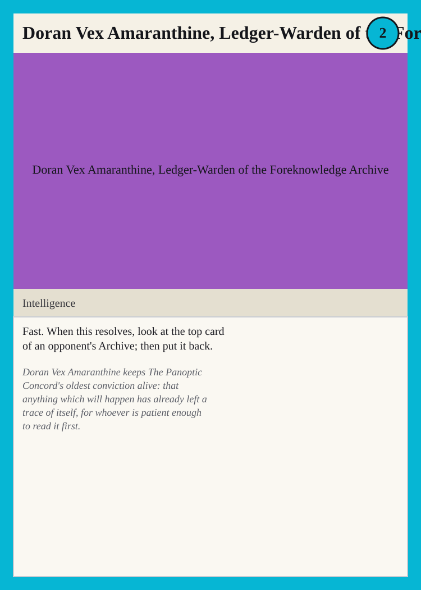
Palette: Cyan — the Signal's cool analytic watchfulness, reading what's already left a trace. Subject/Scene: Doran Vex Amaranthine, Ledger-Warden of the Foreknowledge Archive, leans over an opponent's Archive, reading the top card in cyan light before setting it back exactly as he found it. Key visual elements:
- Doran Vex Amaranthine himself, a named Panoptic Concord Intelligence figure in archive-keeper's dress, not a generic reader
- An opponent's Archive shown mid-read, its top card lit and legible before being placed back untouched
- A patient, unhurried reading posture — the working is quiet observation, not a strike, true to his own conviction that the trace was already there to find
Composition: wide, landscape rectangle (~5:3), the large rectangular window beneath the Name Slot per card-anatomy.md — keep Doran close over the Archive with the opponent's pile lit at the frame's center.
Ysolde Thane, Pilgrim of the Unwritten Sign
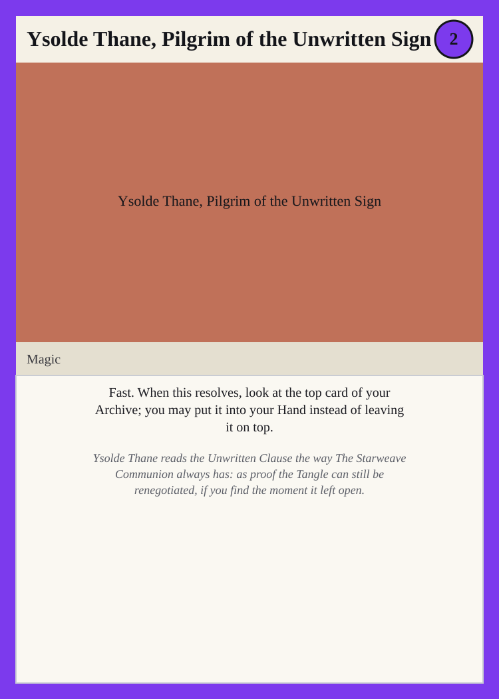
Palette: Violet — the Tangle's uncanny ritual mood, here turned toward finding what's still open. Subject/Scene: Ysolde Thane, Pilgrim of the Unwritten Sign, kneels at the edge of her own Archive, a violet Magic working lifting its top card into view as she decides whether to carry it into her Hand or leave it exactly where it lies. Key visual elements:
- Ysolde Thane herself, a named Starweave Communion Magic pilgrim reading the Unwritten Sign, not a generic caster
- The top card of her own Archive suspended in violet light, visibly a moment of choice between her Hand and leaving it in place
- A tentative, searching posture — the working reads as renegotiation, patient rather than certain of the outcome
Composition: wide, landscape rectangle (~5:3), the large rectangular window beneath the Name Slot per card-anatomy.md — center Ysolde over her own Archive with the suspended card lit at the frame's midpoint.
Foreman-Prime Yssa Ductile, Keeper of the First Pattern
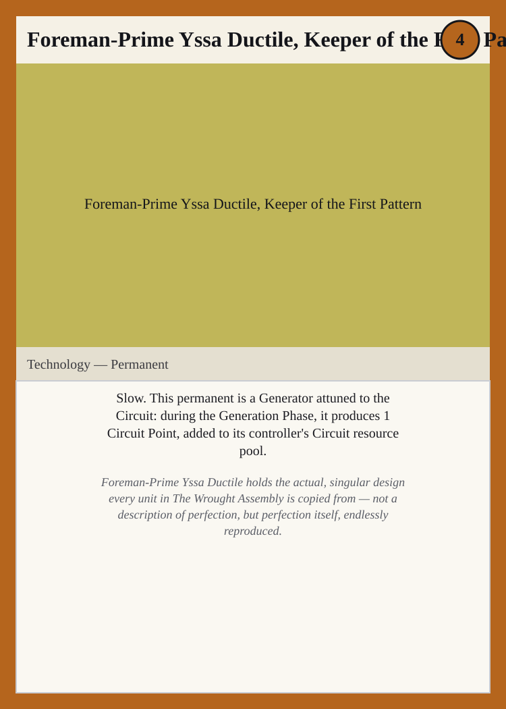
Palette: Copper — the Circuit's warm mechanized repetition, drawn from the one true design. Subject/Scene: Foreman-Prime Yssa Ductile, Keeper of the First Pattern, stands at the Generator core she keeps, its copper Circuit Point flowing into the Wrought Assembly's resource pool as the exact pattern every other Technology unit is stamped from. Key visual elements:
- Foreman-Prime Yssa Ductile herself, a named Wrought Assembly Technology figure guarding the singular First Pattern, not a generic overseer
- The Generator core she attends producing a visible Circuit Point, the resource pool made tangible at her feet
- Rows of Technology units in the distance, each an exact copy of the one pattern she alone keeps, reinforcing that hers is the singular original
Composition: wide, landscape rectangle (~5:3), the large rectangular window beneath the Name Slot per card-anatomy.md — place Yssa and the Generator core center-frame with the reproduced units receding symmetrically behind her.